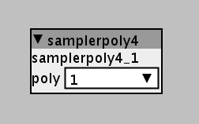

Hey! Got my Axoloti a week ago and cannot stop working on that project  Today I gave it a cardboard enclosure and made this little video. It is a sampler where I can record live input. I have 3 voices with different pitches where I can change the length, starting point and can also modulate the starting point. Then there is another voice that can make this granular atmosphere. Since I am still waiting for 4 faders I control the volume of those voices with midi. The rest can be controlled with analog pods.
Today I gave it a cardboard enclosure and made this little video. It is a sampler where I can record live input. I have 3 voices with different pitches where I can change the length, starting point and can also modulate the starting point. Then there is another voice that can make this granular atmosphere. Since I am still waiting for 4 faders I control the volume of those voices with midi. The rest can be controlled with analog pods.
It is 3 voice polyphonic. More is not possible 
Axoloti Sampler/ Granulator
kryshe
#1
axoman
#2
Nice project, Christian, enjoyed the musical demonstration too. My only grumble is that you didn't upload the patcher file for the curious among us 
Blindsmyth
#3
Nice project indeed, impressive to see what you did with your board in such a short time! Let's meet soon and have a look at your project. I somehow feel we're getting enoguh people for a berlin axoloti meetup 
kryshe
#4
So here is the Patch for the curious among you  I would be very happy about Ideas to simplify the patch, although I think it is already quite simple. But maybe some ways to save a bit of DSP because when I use it in polyphonic mode I can have 3 voices and its already a 90% and I would like to add some effects or a looper. And maybe some of you know a better way to trigger the audio (although I somehow like the way how I managed it :P)
I would be very happy about Ideas to simplify the patch, although I think it is already quite simple. But maybe some ways to save a bit of DSP because when I use it in polyphonic mode I can have 3 voices and its already a 90% and I would like to add some effects or a looper. And maybe some of you know a better way to trigger the audio (although I somehow like the way how I managed it :P)
https://drive.google.com/drive/folders/1Hb7NBll1wIYSHOe66Xr-k8wvuosveDRm?usp=sharing
kryshe
#5
And today I started giving my sampler a nice wooden enclosure! (don't know why the picture looks so strange here...)
axoman
#6
Thanks for being a good sport and uploading the sketch 
I'm not around my Axo at the moment but look forward to seeing how you made it work when I get back to it. Regards the polyphony, I think I read somewhere that some people use the on-board headers so that two or more boards can talk to each other and increase the polyphony.
Enclosure is looking good but I would have put some Tung Oil on it as well 
andRe
#7
Hi, really cool patch. Tried to download it but it seems you have deleted it from your googledrive. Any chance for you to upload it again???
GDrive tells me you moved the file to the trash. Can you upload it here directly? This looks like you're doing something very similar to what I'm trying to do!
reubenfinger
#11
It may not be my place but I downloaded the patch at the time and just noticed the thread also it appears that Kryshe is no longer active, there seems to be some demand for the patch so here it is, I hope he doesn't mind
samplerpoly4.axs (45.6 KB)
TangoTits
#12
Thanks!
When trying put this patch live, i get an error saying 'This is a subpatch intented to be used by a main patch and possibly has no output. Do you still want to take it live?'.
When taking it live, my axoloti quits after a few secs with an error saying:
Ping: WaitSync Timeout, disconnecting now
Disconnect request
java.lang.InterruptedException
java.lang.InterruptedException
at java.lang.Object.wait(Native Method)
at java.lang.Object.wait(Object.java:502)
at java.awt.EventQueue.invokeAndWait(EventQueue.java:1315)
at java.awt.EventQueue.invokeAndWait(EventQueue.java:1296)
at javax.swing.SwingUtilities.invokeAndWait(SwingUtilities.java:1348)
at axoloti.USBBulkConnection.DistributeToDisplays(USBBulkConnection.java:1079)
at axoloti.USBBulkConnection.processByte(USBBulkConnection.java:1258)
at axoloti.USBBulkConnection$Receiver.run(USBBulkConnection.java:868)
at java.lang.Thread.run(Thread.java:745)
Any idea what's wrong?
janvantomme
#13
Files ending in .axs are subpatch files, so you'll need to include this one in a main patch in order for it to run.
TangoTits
#14
Is the main patch still up for grabs somehow or is this the original file that's been shared by the maker? I imagine I can't just put it in any patch? I tried dragging the .axs file in a new patcher, but got something without the necessary ins and outs..

reubenfinger
#15
That was the original file that was uploaded by Kryshe. I don't think I ever went live with it, so haven't tested, but just from looking at it, it seems to be a complete patch just saved as a subpatch. I have two suggestions, one copy/paste the whole patch from the subpatch into a new patch make sure it works and then just save that or it you want it to remain a subpatch then replace the stereo audio in and outs with audio patch outlets (eg 2 x patch/outlet a) and inlets and wire that up in your existing patch..
not near my axo at the moment so you will have to verify the patch works yourself, I'm sure it will be fine though.
janvantomme
#16
I've just copied all the objects and pasted them into a new patch and everything seems to work. Noticed that the patch uses analog inputs as controls so you may have to replace them with MIDI if you haven't soldered any pots to your board.
kryshe
#17
Hey Folks!
There seems to be a bit of interest in my sampler! I uploaded the newest version of it again. You will find it here:
https://drive.google.com/file/d/15THs2aRAxCWYY2EVtTCQ5lr9T8nkEyHO/view?usp=sharing
let me know what you think. maybe you have some Ideas how to improve =)
I just started a new project! A Sampler with a step sequencer =)
Best
Christian